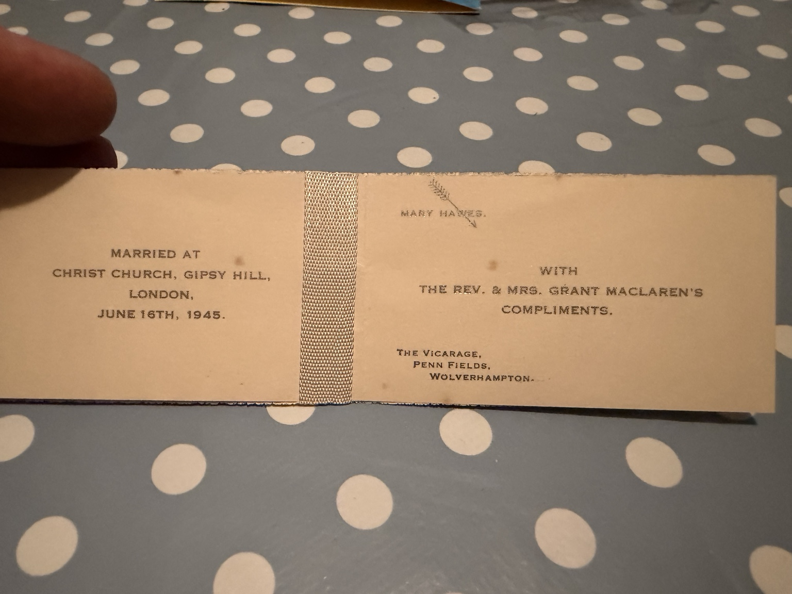

Mary Hawes and Rev Grant MacLaren
A wedding group photograph and printed marriage card supplied together by Antony Greenfield on 8 November 2026. The card records the marriage at Christ Church, Gipsy Hill, London, on 16 June 1945.

Printed marriage card

MARRIED AT
CHRIST CHURCH, GIPSY HILL,
LONDON,
JUNE 16TH, 1945.
MARY HAWES.
WITH
THE REV. & MRS. GRANT MACLAREN’S
COMPLIMENTS.
THE VICARAGE,
PENN FIELDS,
WOLVERHAMPTON.
What the card adds
The card supplies an exact marriage date, church and the couple’s stated address. It prints the surname MacLaren, correcting the earlier family-supplied spelling McClaren. The Penn Fields address is evidence of their stated address on the card; it does not by itself establish Grant’s exact appointment or its duration. The original marriage register has not yet been examined.
The bridesmaid at the right is identified as Madeline by family testimony supplied on 8 November 2026. The uniformed man at the left remains unidentified. The originals are preserved without restoration.
Mary’s biography and records · Madeline’s biography · Grant’s individual portrait